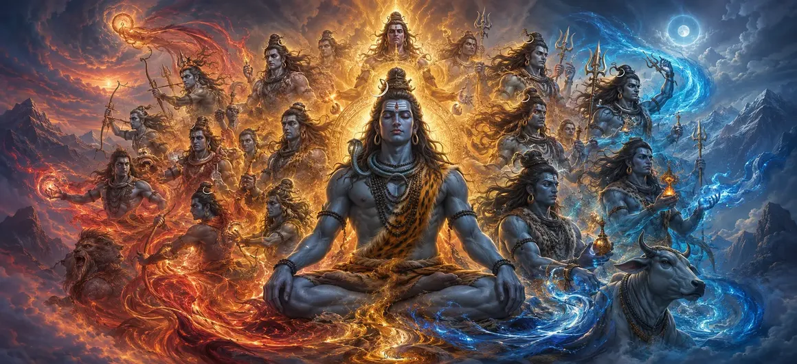

रुद्रों का प्राकट्य
वायवीय संहिता के अध्याय 14 में, भगवान वायु ने रुद्रों की राजसी अभिव्यक्ति का वर्णन किया है, उनकी उग्र कृपा, सर्वोच्च शिव से दिव्य उत्पत्ति और ब्रह्मांडीय परिवर्तन में उनकी महत्वपूर्ण भूमिकाओं का विवरण दिया है।
यह अध्याय बताता है कि सार्वभौमिक संतुलन बनाए रखने के लिए परिवर्तनकारी ऊर्जा कैसे काम करती है।
भक्तों को ईश्वर के उग्र लेकिन दयालु पहलू के प्रति गहरी सराहना प्राप्त होती है।
अध्याय 14 व्यापक हाइलाइट्स
भयंकर उभार
रुद्रों की राजसी और शक्तिशाली अभिव्यक्ति।
परिवर्तनकारी शक्ति
ब्रह्मांडीय नवीनीकरण में रुद्रों की भूमिका को समझना।
शिव का प्रत्यक्ष स्वरूप
रुद्रों को सर्वोच्च शिव के प्रत्यक्ष विस्तार के रूप में पहचानना।
लौकिक शासन
दिव्य परिशुद्धता के साथ विघटन और पुनः एकीकरण को क्रियान्वित करना।
दयालु विनाश
आत्मा को मुक्त करने के लिए अज्ञानता को दूर करना।
भजनों का प्रवेश द्वार
शिव और शक्ति को संबोधित स्तोत्र की कथा तैयार करना।
इस अध्याय में मुख्य विषय
- 01रुद्रों की दिव्य उत्पत्ति→
- 02उग्र अनुग्रह और करुणा की प्रकृति→
- 03विघटन और नवीकरण में लौकिक भूमिकाएँ→
- 04परम शिव से सीधा संबंध→
- 05अज्ञान और अंधकार को दूर करना→
- 06त्रिमूर्ति कार्यों का सामंजस्य→
- 07ऋषियों का आदर और आदर→
- 08रुद्र स्वरूपों का आध्यात्मिक महत्व→
- 09परिवर्तनकारी ऊर्जा पर विचार करना→
- 10शिव और शक्ति को संबोधित एक भजन में परिवर्तन→
रुद्रों की दिव्य उत्पत्ति
भगवान वायु बताते हैं कि कैसे रुद्र सीधे सर्वोच्च शिव की शक्तिशाली ऊर्जा और भावनात्मक तीव्रता से प्रकट होते हैं।
उनका उद्भव नव संरचित ब्रह्मांड में परिवर्तनकारी शक्ति की एक गतिशील लहर लाता है।
उग्र अनुग्रह और करुणा की प्रकृति
उग्र और भयानक रूप धारण करने के बावजूद, रुद्र परम करुणा का प्रतीक हैं, जो आध्यात्मिक विकास के लिए अथक प्रयास करते हैं।
विघटन और नवीकरण में लौकिक भूमिकाएँ
पाठ घिसी-पिटी संरचनाओं को नष्ट करने, ब्रह्मांडीय पुनर्जनन और पुनर्जन्म का मार्ग साफ करने में उनके विशिष्ट कर्तव्य पर प्रकाश डालता है।
परम शिव से सीधा संबंध
रुद्र सर्वोच्च शिव के साथ एक अटूट पहचान साझा करते हैं, जो ब्रह्मांडीय शुद्धि के लिए उनके प्रत्यक्ष एजेंट के रूप में कार्य करते हैं।
अज्ञान और अंधकार को दूर करना
उनकी प्रज्ज्वलित चमक आध्यात्मिक अंधता को दूर कर देती है और सभी क्षेत्रों के साधकों की चेतना को प्रकाशित कर देती है।
त्रिमूर्ति कार्यों का सामंजस्य
अब रुद्रों के प्रकट होने के साथ, सृजन, संरक्षण और विघटन का ब्रह्मांडीय चक्र पूर्ण समापन और संतुलन तक पहुँच जाता है।
ऋषियों का आदर और आदर
दिव्य ऋषि इस गौरवशाली अभिव्यक्ति को गहन विस्मय के साथ देखते हैं, तेजस्वी रुद्रों की स्तुति करते हैं।
रुद्र स्वरूपों का आध्यात्मिक महत्व
रुद्र रूपों को समझना साधकों को बिना किसी डर या प्रतिरोध के जीवन के आवश्यक परिवर्तनों को अपनाना सिखाता है।
परिवर्तनकारी ऊर्जा पर विचार करना
रुद्रों का ध्यान सूक्ष्म शरीर को शुद्ध करता है और आंतरिक अशांति को शांत करता है, जिससे आध्यात्मिक लचीलापन मिलता है।
शिव और शक्ति को संबोधित एक भजन में परिवर्तन
अध्याय 14 का समापन करते हुए, भगवान वायु प्रवचन को सर्वोच्च शिव और दिव्य शक्ति की स्तुति करने वाले उत्कृष्ट भजनों की ओर ले जाते हैं।
अध्याय 14 की विस्तारित मुख्य शिक्षाएँ
रुद्र उद्भव
शिव की ऊर्जा से अभिव्यक्ति.
परिवर्तनकारी आग
अज्ञानता और थकावट को दूर करना।
शिव की पहचान
परमेश्वर का प्रत्यक्ष विस्तार.
ब्रह्मांडीय संतुलन
त्रिमूर्ति चक्र पूरा करना।
आध्यात्मिक कृपा
दिव्य समर्पण के माध्यम से निर्भयता.
भजनों का प्रवेश द्वार
शिव और शक्ति के भजनों की ओर परिवर्तन।
विस्तारित आध्यात्मिक चिंतन
जब हम रुद्रों की उज्ज्वल और उग्र अभिव्यक्ति पर विचार करते हैं, तो हमें एहसास होता है कि दैवीय योजना में विनाश कभी भी मात्र विनाश नहीं होता है; यह परम शुद्ध करने वाली अग्नि है जो अज्ञानता को दूर करती है और आत्मा को भगवान शिव के अधीन सर्वोच्च मुक्ति और आध्यात्मिक नवीनीकरण के लिए तैयार करती है।
अध्याय 14 का संदेश जीना
जीवन के आवश्यक परिवर्तनों को साहस के साथ स्वीकार करें, प्रत्येक चुनौती को एक शुद्ध करने वाली आध्यात्मिक अग्नि के रूप में देखें।
अपने आंतरिक अहंकार और आध्यात्मिक अंधेपन को सर्वोच्च भगवान की रूपांतरित करने वाली कृपा के प्रति समर्पित कर दें।
ईश्वर के सौम्य और उग्र दोनों पहलुओं के प्रति श्रद्धा पैदा करें।
विस्तृत प्रमुख आध्यात्मिक अवधारणाएँ
रुद्रों की दिव्य अभिव्यक्ति.
विघटन की परिवर्तनकारी ऊर्जा.
रुद्रों की प्रज्ज्वलित चमक.
ज्ञान की अग्नि अज्ञान को जला देती है।
परम शिव का आंतरिक रूप.
उग्र कृपा के प्रति भक्तिपूर्ण समर्पण।
विस्तृत अध्याय सारांश
वायवीय संहिता अध्याय 14 ('रुद्रों का प्रकटीकरण') सीधे सर्वोच्च शिव की ऊर्जा से रुद्रों के गौरवशाली उद्भव का वर्णन करता है। इसमें ब्रह्मांडीय विघटन, नवीकरण और आध्यात्मिक अज्ञान के उन्मूलन में उनकी उग्र लेकिन दयालु भूमिका का विवरण दिया गया है। यह अध्याय पवित्र त्रिमूर्ति की सक्रिय अभिव्यक्ति को पूरा करता है और साधक को अध्याय 15 में शिव और शक्ति को समर्पित उत्कृष्ट भजनों के लिए तैयार करता है।
अक्सर पूछे जाने वाले प्रश्न
1. वायवीय संहिता अध्याय 14 ('रुद्रों का प्रकटीकरण') का प्राथमिक विषय क्या है?
अध्याय में रुद्रों की दिव्य उपस्थिति, प्रकृति और ब्रह्मांडीय कार्यों का विवरण दिया गया है क्योंकि वे भगवान शिव की सर्वोच्च इच्छा के तहत प्रकट होते हैं।
2. इस विवरण में रुद्रों की उत्पत्ति कैसे हुई?
रुद्र सर्वोच्च शिव की दिव्य ऊर्जा और भावनात्मक गहराई से प्रकट होते हैं, जो उग्र अनुग्रह और परिवर्तनकारी शक्ति का प्रतीक हैं।
3. रुद्रों को कौन सी विशिष्ट ब्रह्मांडीय भूमिकाएँ सौंपी गई हैं?
रुद्रों को परिवर्तनकारी शासन, अज्ञानता को दूर करने और पूरे ब्रह्मांड में ब्रह्मांडीय संतुलन बनाए रखने का काम सौंपा गया है।
4. रुद्रों का परम शिव के साथ क्या संबंध है?
शिव के स्वयं के रूप और ऊर्जा के प्रत्यक्ष विस्तार के रूप में, रुद्र उनके परिवर्तनकारी और सुरक्षात्मक आदेशों को पूरा करते हैं।
5. आध्यात्मिक जिज्ञासुओं के लिए रुद्रों की अभिव्यक्ति का अध्ययन क्यों महत्वपूर्ण है?
यह साधकों को यह समझने में मदद करता है कि ब्रह्मांड में विनाश या परिवर्तन अनिवार्य रूप से नवीनीकरण और अनुग्रह का एक दिव्य कार्य है।
6. इस अध्याय के बाद नेविगेशन के लिए अगला अध्याय कौन सा है?
नेविगेशन के लिए अगला अध्याय 'शिव और शक्ति को संबोधित एक भजन' है।
"अज्ञानता को दूर करने और आत्माओं को शाश्वत आध्यात्मिक चेतना में जागृत करने के लिए दीप्तिमान रुद्र सर्वोच्च शिव से प्रकट होते हैं।"
वायवीय संहिता के माध्यम से जारी रखें
अध्याय 14 समाप्त हुआ. अगले अध्याय को जारी रखें, शिव और शक्ति को संबोधित एक भजन।